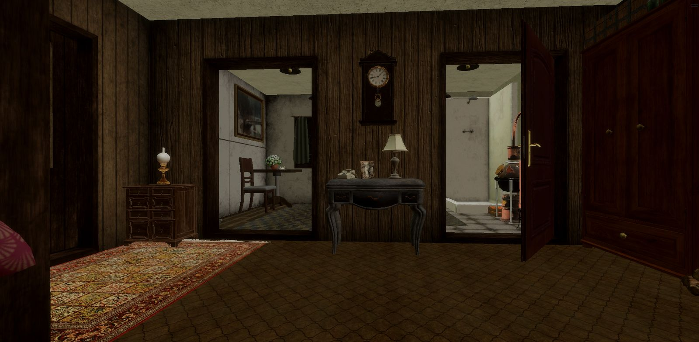
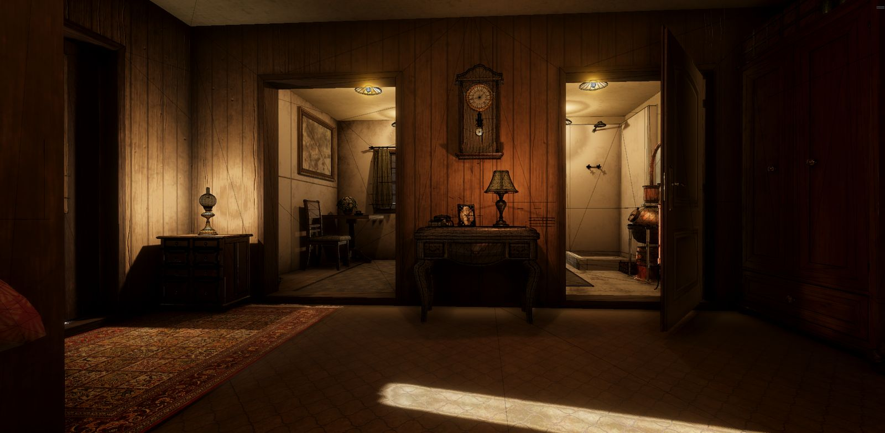
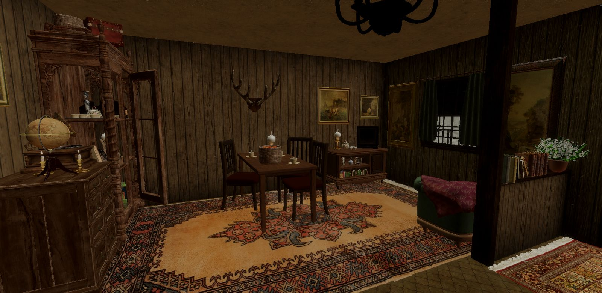
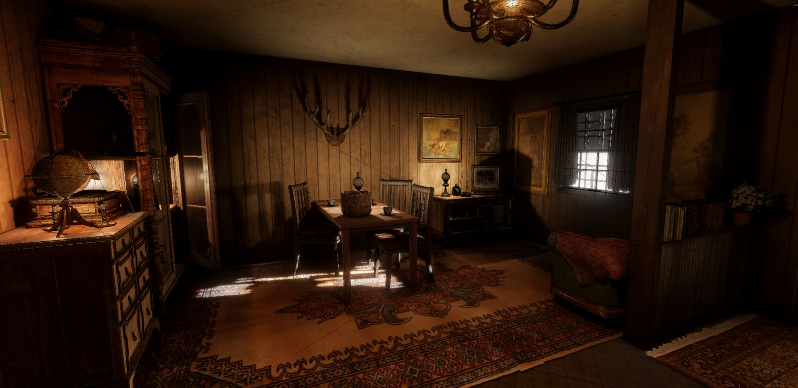
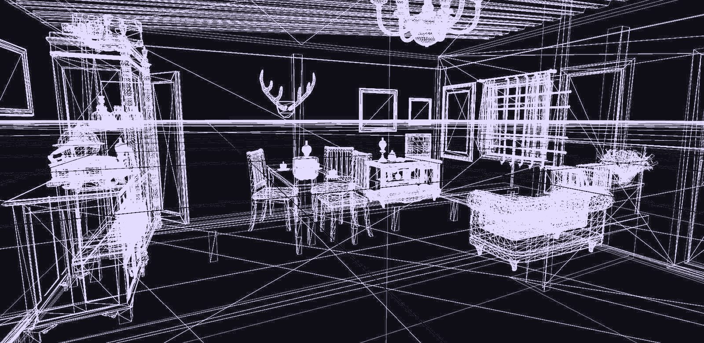
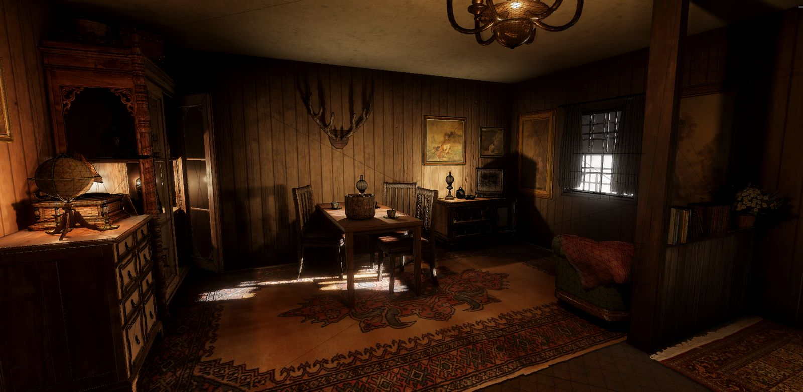

Nicolas Schulze
I build and maintain the systems behind industrial and agricultural training simulators: vehicle physics, physical hardware controls, lessons and evaluation, reporting and performance. Most of that work happens inside large, shared codebases.
Construo e mantenho os sistemas por trás de simuladores de treinamento industriais e agrícolas: física de veículos, controles físicos, lições e avaliação, relatórios e performance. A maior parte desse trabalho acontece dentro de bases de código grandes e compartilhadas.
Brazil (UTC−3) · Fully remote · Mid-level and Senior · full-time or contract
Brasil (UTC−3) · 100% remoto · pleno e sênior · CLT ou PJ
Simulators in production, and one study
Simuladores em produção, e um estudo
Shipped training simulators built with a team, plus one personal study. Open a quick preview or the full case.Simuladores de treinamento entregues em equipe e um estudo pessoal. Abra a pré-visualização rápida ou o case completo.
Where the work was done, and for whom
Onde o trabalho foi feito, e para quem
The companies I work for, and the clients and partners of the simulators I helped build.As empresas onde trabalho e os clientes e parceiros dos simuladores que ajudei a construir.
![RDSIMTECH]()
Since Oct 2026 · Yellow and RDLessonDesde out/2026 · Yellow e RDLesson
![RealDrive Tech]()
Jan 2022 – Oct 2026 · Agro, Schio, VR, Yellowjan/2022 – out/2026 · Agro, Schio, VR, Yellow
![SENAI]()
Heavy-equipment operator simulator (Yellow)Simulador de Linha Amarela (Yellow)
![Agropecuária Schio]()
Apple-orchard and warehouse simulatorSimulador do pomar de maçã e armazém
![Finep]()
AGRO 4.0 program · RealDrive AgroPrograma AGRO 4.0 · RealDrive Agro
![Cobra Correntes]()
VR assembly training on Meta Quest 3Treinamento de montagem em VR no Meta Quest 3
Client projects were done as an employee of RealDrive Tech and RDSIMTECH, with a team. Names and logos belong to their owners.Os projetos de clientes foram feitos como funcionário da RealDrive Tech e da RDSIMTECH, em equipe. Nomes e logos pertencem aos seus donos.
Where each skill can be checked
Onde cada skill pode ser conferida
Each dot is a project where the skill shows up. Click a project name to open its preview.Cada ponto é um projeto onde a skill aparece. Clique no nome de um projeto para abrir a pré-visualização.
| SkillSkill | ||||
|---|---|---|---|---|
| Simulation systemsSistemas de simulaçãoLesson lifecycle, tasks, scoring, infractions, restartCiclo de lição, tarefas, pontuação, infrações, reinício | ✓ | ✓ | ✓ | – |
| Vehicle physicsFísica de veículosRigidbodies, joints, trailers, implements, forklift, binsRigidbodies, joints, reboques, implementos, empilhadeira, bins | – | ✓ | – | – |
| Hardware & inputHardware e inputSteering, analog axes, calibration, persistent mappingVolante, eixos analógicos, calibração, mapeamento persistente | – | ✓ | ✓ | – |
| Rendering & HDRPRender e HDRPMulti-camera, RenderTextures, mirrors, lightingMulti-câmera, RenderTextures, espelhos, iluminação | ✓ | – | ✓ | ✓ |
| PerformancePerformanceStartup vs steady state, GC per frame, camera costStartup vs steady state, GC por frame, custo de câmeras | – | – | ✓ | – |
| Data & reportingDados e relatóriosTelemetry → JSON → report UI → PDFTelemetria → JSON → UI de relatório → PDF | ✓ | ✓ | ✓ | – |
| C# toolingFerramentas em C#Custom Inspectors, capture and recording toolsInspectors customizados, captura e gravação | – | – | – | ✓ |
| Level designLevel designComposition, set dressing, light as layoutComposição, set dressing, luz como layout | ✓ | ✓ | – | ✓ |
Everything about the projects
Tudo sobre os projetos
Each project opens a quick preview or a full case with process, credits and images.
Cada projeto abre uma pré-visualização rápida ou o case completo, com processo, créditos e imagens.
Unity Developer · Simulation, VR & Games
Desenvolvedor Unity · Simulação, VR e Jogos
I joined as a junior on the first version of RealDrive Agro and learned Unity and C# hands-on, in production projects, with independent study alongside. At RealDrive Tech (2022–2026), now RDSIMTECH, I moved from level implementation to owning runtime systems in training simulators. My strongest work is integration: physics, hardware, lessons, reports and performance inside existing architectures.
Entrei como júnior na primeira versão do RealDrive Agro e aprendi Unity e C# na prática, em projetos de produção, com estudo independente em paralelo. Na RealDrive Tech (2022–2026), hoje RDSIMTECH, saí da implementação de níveis até assumir sistemas de runtime em simuladores de treinamento. Meu trabalho mais forte é integração: física, hardware, lições, relatórios e performance dentro de arquiteturas já existentes.
How the work evolved
Como o trabalho evoluiu
Each stage built on the previous one. The order matters more than any single title.
Cada etapa se apoiou na anterior. A ordem importa mais do que qualquer título.
RealDrive Tech, starting from the ground
RealDrive Tech, começando pelo chão
RealDrive Tech (2022–2026), now RDSIMTECH. I joined in January 2022 as a junior on the first version of RealDrive Agro. On RealDrive Agro I built Farm 1 and Farm 2, soybean, corn and wheat with growth stages, LODs and 2D billboards for thousands of plants, and the menu flow from farm to machine. The recovered repository history starts in October 2023, with a terrain commit.
RealDrive Tech (2022–2026), hoje RDSIMTECH. Entrei em janeiro de 2022 como júnior na primeira versão do RealDrive Agro. No RealDrive Agro construí a Farm 1 e a Farm 2, soja, milho e trigo com estágios de crescimento, LODs e billboards 2D para milhares de plantas, e o fluxo de menus da fazenda até a máquina. O histórico recuperado do repositório começa em outubro de 2023, com um commit de terreno.
Environments, UI and vehicles
Ambientes, UI e veículos
Apple Farm and Schio Storage environments, main menu, garage and vehicle selection, then vehicle and implement integration and physics.
Ambientes Apple Farm e Schio Storage, menu principal, garagem e seleção de veículos; depois integração de veículos e implementos, e física.
Lessons, users and reports
Lições, usuários e relatórios
Extended the inherited lesson and task systems. Built user registration and search, training statistics and JSON-to-PDF reports. House Farm study in parallel.
Estendi os sistemas de lição e tarefa herdados. Construí cadastro e busca de usuários, estatísticas de treinamento e relatórios de JSON para PDF. Estudo House Farm em paralelo.
Hardware and hard bugs
Hardware e bugs difíceis
Physical controls, bin and forklift physics debugging, industrial silo refinement, HDRP migration and XR cleanup.
Controles físicos, depuração de física de bins e empilhadeira, refinamento do silo industrial, migração para HDRP e limpeza de XR.
VR on Meta Quest
VR no Meta Quest
Assembly training for Cobra Correntes and an overhead crane (RealDrive Industrial).
Treinamento de montagem para a Cobra Correntes e ponte rolante (RealDrive Industrial).
Ownership and performance
Ownership e performance
RealDrive Agro: lesson telemetry and the PDF report exporter. Yellow and RDLesson: lesson evaluation P01–P08 and the PDF report, guidance from the real cab controls, mirrors, Control Mapper, UI navigation, restart with UDP recovery and 4K performance, with an agent-assisted workflow and Editor tests.
RealDrive Agro: telemetria das aulas e exportador de relatório em PDF. Yellow e RDLesson: avaliação das lições P01–P08 e relatório em PDF, orientação pelos controles reais da cabine, espelhos, Control Mapper, navegação da UI, reinício com recuperação do UDP e performance em 4K, com fluxo de trabalho assistido por agentes e testes de Editor.
RDSIMTECH
RDSIMTECH
Continuing Yellow and RDLesson.
Continuidade do Yellow e do RDLesson.
Understand first, change the minimum
Entender primeiro, mudar o mínimo
I read the existing implementation before replacing it, and I read the final diff before anything is committed, including prefabs and serialized references.
Leio a implementação existente antes de substituí-la, e leio o diff final antes de qualquer commit, incluindo prefabs e referências serializadas.
- 01InvestigateInvestigarRead-only firstPrimeiro só leitura
- 02BaselineMeasure current behaviorMedir o comportamento atual
- 03Root causeCausa raizNot the first symptomNão o primeiro sintoma
- 04ScopeEscopoWhat will not changeO que não vai mudar
- 05Minimal changeMudança mínimaNo unrelated refactorsSem refactors paralelos
- 06TestTestarAgainst the baselineContra o baseline
- 07AuditAuditarLook for regressionsProcurar regressões
- 08Fix & retestCorrigir e retestarWhat the audit foundO que a auditoria achou
- 09Diff reviewRevisar o diffPrefabs and serialized refs includedIncluindo prefabs e refs serializadas
- 10Commit decisionDecisão de commitMade by meTomada por mim
- Repository investigation and Git history analysis
- Assisted implementation, with every diff reviewed by me
- Debugging guided by my own hypotheses
- Regression and performance audits
- Code review and documentation
- Investigação do repositório e análise do histórico Git
- Implementação assistida, com cada diff revisado por mim
- Depuração guiada pelas minhas hipóteses
- Auditorias de regressão e performance
- Code review e documentação
- Objectives and scope
- Architecture and invariants
- Risk and acceptance criteria
- Every final Git decision
- Objetivos e escopo
- Arquitetura e invariantes
- Risco e critérios de aceite
- Toda decisão final no Git
Skills, with evidence
Skills, com evidência
Every skill points to the projects where it can be checked.
Cada skill aponta para os projetos onde pode ser verificada.
| AreaÁrea | IncludesInclui | Shown inOnde aparece |
|---|---|---|
| Unity runtime | Scene and prefab architecture, prefab variants, serialized references, loading and scene transitionsArquitetura de cenas e prefabs, prefab variants, referências serializadas, loading e transição de cenas | Schio · Yellow |
| Simulation systemsSistemas de simulação | Lesson lifecycle, tasks and objectives, scoring, infractions, restartCiclo de vida de lição, tarefas e objetivos, pontuação, infrações, reinício | RealDrive Agro · Schio · Yellow |
| Vehicle physicsFísica de veículos | Rigidbodies, joints, trailers, implements, forklift, bin physicsRigidbodies, joints, reboques, implementos, empilhadeira, física de bins | Schio |
| Hardware inputInput de hardware | Rewired, Input System, calibration, inversion, persistent mappingRewired, Input System, calibração, inversão, mapeamento persistente | Schio · Yellow |
| Virtual realityRealidade virtual | Meta Quest 3, Meta XR SDK, XR Interaction Toolkit, XR Hands, OpenXR | VR · RDI · Overhead cranePonte rolante |
| Rendering | HDRP, multi-camera, RenderTextures, mirrors, lightingHDRP, multi-câmera, RenderTextures, espelhos, iluminação | Yellow · House Farm · RealDrive Agro |
| Data and reportingDados e relatórios | Telemetry, statistics, JSON, report UI, PDF export, safe overwriteTelemetria, estatísticas, JSON, UI de relatório, exportação em PDF, sobrescrita segura | RealDrive Agro · Schio · Yellow |
| Performance | Profiling, GC allocation, startup vs steady stateProfiling, alocação de GC, startup vs steady state | Yellow |
| ToolingFerramentas | Custom Inspectors, capture and recording toolsInspectors customizados, ferramentas de captura e gravação | House Farm |
| Level design | Composition, set dressing, lighting, HDRP materials, basic Blender and Substance for asset adjustmentsComposição, set dressing, iluminação, materiais HDRP, noções de Blender e Substance para ajustes em assets | House Farm · RealDrive Agro · Schio |
- More automated testing in Unity projects, less manual validation
- Spreading system knowledge so ownership does not sit with one person
- Mentoring and delegation
- Keeping process proportional to the risk of the change
- Mais testes automatizados em projetos Unity, menos validação manual
- Distribuir conhecimento dos sistemas para que o ownership não fique com uma pessoa só
- Mentoria e delegação
- Manter o processo proporcional ao risco da mudança
- SENAI
- Brazil's national industrial vocational training service
- Finep
- Brazil's federal innovation funding agency
- Linha Amarela
- "Yellow line": heavy construction and mining equipment
- Tecnoshow, Show Rural
- Brazilian agricultural trade fairs
- Rewired
- Input and controller framework for Unity
- HDRP
- Unity's High Definition Render Pipeline
- RDLesson
- RealDrive's shared lesson and evaluation framework
- LOD / impostor
- Lower-detail stand-ins drawn at a distance
- PTO
- Power take-off, the shaft that drives an implement
- IL2CPP
- Unity's ahead-of-time build backend
Building a simulator?
Construindo um simulador?
Open to fully remote Mid-level and Senior roles, full-time or contract, in simulation, VR, training and industrial Unity projects.
Aberto a vagas 100% remotas, pleno e sênior, CLT ou PJ, em projetos Unity de simulação, VR, treinamento e indústria.
From the ground to the report
Do chão ao relatório
My part in a team simulator, in five stages, with who built what.
Minha parte num simulador feito em equipe, em cinco etapas, com quem fez o quê.
- ContextContexto
RealDrive Agro is a training simulator for operating agricultural machines: planting, spraying and harvesting, with an evaluation report at the end of each lesson. It was built as a team at RealDrive within AGRO 4.0, a program funded by Finep (Brazil's federal innovation funding agency), and shown at the Brazilian agricultural trade fairs Tecnoshow and Show Rural.
O RealDrive Agro é um simulador de treinamento para operação de máquinas agrícolas: plantio, pulverização e colheita, com relatório de avaliação ao final de cada aula. Foi desenvolvido em equipe na RealDrive dentro do projeto AGRO 4.0, com apoio da Finep, e apresentado em feiras como Tecnoshow e Show Rural.
- ResultsResultados
- Built: the two farms, the crop system (three crops with growth stages, cut and crushed states), the menu flow and garage, and later the lesson telemetry and the PDF report
- Problem solved: thousands of plants on screen with the simulator still usable, and a lesson that ends in a report the instructor can read
- Impact: part of a Finep-funded training simulator, shown at the Brazilian agricultural trade fairs Tecnoshow and Show Rural
- O que construí: as duas fazendas, o sistema de culturas (três culturas com estágios de crescimento, versões cortada e amassada), o fluxo de menus e a garagem, e depois a telemetria das aulas e o relatório em PDF
- Problema resolvido: milhares de plantas na tela sem travar o simulador, e uma aula que termina num relatório que o instrutor consegue ler
- Impacto: parte de um simulador de treinamento financiado pela Finep, apresentado na Tecnoshow e no Show Rural
- 1 · The ground1 · O chão
Before simulating a machine, it needed a place where it made sense. I owned the environment and level design of the two farms, Farm 1 and Farm 2:
- Terrain, plots and operating areas, aligned to the world origin, plus roads, fences, street lighting, forests, mountains and skyboxes
- Soybean, corn and wheat with growth stages, in rows (75 cm spacing), with density tuned per operation
- Cut versions of each crop after harvest, and crushed vegetation behind the machine (
GrassBendController) - Performance for thousands of plants: LODs, 2D billboards, static crops in the background and render layers
- Crop loading and spawning through
RDSceneManagerand the terrain detail layers
Antes de simular uma máquina, era preciso um lugar onde ela fizesse sentido. Fui responsável pelo ambiente e pelo level design das duas fazendas, Farm 1 e Farm 2:
- Terreno, talhões e áreas operacionais, alinhados à origem do mundo, mais estradas, cercas, iluminação viária, florestas, montanhas e skyboxes
- Soja, milho e trigo com estágios de crescimento, em linhas (espaçamento de 75 cm), com densidade ajustada para cada operação
- Versões cortadas de cada cultura depois da colheita, e vegetação amassada atrás da máquina (
GrassBendController) - Performance para milhares de plantas: LODs, billboards 2D, culturas estáticas no fundo e layers de renderização
- Carregamento e spawn das culturas pelo
RDSceneManagere pelas camadas de detalhe do terreno
- 2 · Menus and scenes2 · Menus e cenas
The path from opening the simulator to driving the machine, built with Doozy UI:
- Farm and machine selection, weather settings, pause menu and back navigation
- Scene loading with per-farm loading images, and layouts adapted to different resolutions
- The garage in the main menu, with colour options (see the Garagem case)
- First Rewired integration in the farm scenes, and fixes such as the minimap marker disappearing on Farm 1
O caminho entre abrir o simulador e dirigir a máquina, construído com Doozy UI:
- Seleção de fazenda e de máquina, configurações de clima, menu de pausa e navegação de volta
- Carregamento de cenas com imagens de loading por fazenda, e layouts adaptados a diferentes resoluções
- A garagem do menu principal, com opções de cor (veja o case da Garagem)
- Primeira integração do Rewired nas cenas das fazendas, e correções como o indicador do minimapa que sumia na Farm 1
- The menu garageA garagem do menu
The machine-selection screen, turned into a space where one machine stands alone on stage. It is part of this simulator, but a separate piece of work, so it has its own case.
A tela de seleção de máquinas transformada num espaço onde uma máquina fica sozinha no palco. Faz parte deste simulador, mas é um trabalho por si só, por isso tem o próprio case.
- 3 · Harvest3 · Colheita
A harvest has stages: cut, store, transfer, unload. I created the first version of the harvest controller (
RDHarvestClassController: unloading and the grain pile). Vinicius built the grain tank, grain loss and falling grain. I then integrated triggers, unloading points, farm limits and the link to telemetry and the report.Uma colheita tem etapas: cortar, armazenar, transbordar, descarregar. Criei a primeira versão do controlador de colheita (
RDHarvestClassController: descarga e monte de grãos). O Vinicius fez o graneleiro, as perdas e a queda dos grãos. Depois eu integrei gatilhos, pontos de descarga, limites da fazenda e a ligação com a telemetria e o relatório.- 4 · Rules, not buttons4 · Regras, não botões
A working machine is not, on its own, training. The flow is: machine state → condition → allowed/blocked action → sequence → detection → feedback → progression. Three people built it: Guilherme Schaeffer the structure, menus and completion UI; Vinicius routes, damage and colliders; I built the procedure sequences and the safety locks.
Uma máquina funcionando não é, sozinha, um treinamento. O fluxo é: estado da máquina → condição → ação permitida/bloqueada → sequência → detecção → feedback → progressão. Três pessoas construíram: o Guilherme Schaeffer a estrutura, os menus e a UI de conclusão; o Vinicius rota, dano e colisores; eu as sequências de procedimento e as travas de segurança.
- 5 · From simulating to measuring5 · De simular a medir
In 2026 I created the lesson data collection: speed, RPM, throttle, brake, steering, load, position and machine states, about 10 times per second. I created
LessonPdfExporterand developed it with Guilherme: at the end of the lesson it generates a PDF with the path drawn as vectors, charts, statistics, grain loss and speed recommendations, opened inside the simulator.Em 2026 criei a coleta de dados da aula: velocidade, RPM, acelerador, freio, direção, carga, posição e estados da máquina, cerca de 10 vezes por segundo. Criei o
LessonPdfExportere o desenvolvi com o Guilherme: no fim da aula ele gera um PDF com a trajetória desenhada em vetor, gráficos, estatísticas, perda de grãos e recomendações de velocidade, aberto dentro do simulador.- What I would do differentlyO que eu faria diferente
- Sampling depends on frame rate; it is not frame-rate independent.
- The exporter grew too large in a single file.
- There are no automated tests.
- A amostragem depende do framerate; ela não é independente dele.
- O exportador ficou grande demais num arquivo só.
- Faltam testes automatizados.
- CreditsCréditos
Machine models, cab, controls and hardware: RealDrive team.
Modelos das máquinas, cabine, comandos e hardware: equipe RealDrive.
Planting, spraying and harvesting
Plantio, pulverização e colheita
Captures from the simulator. Click any image to enlarge; use the arrow keys to move through the set.
Capturas do simulador. Clique em qualquer imagem para ampliar; use as setas do teclado para navegar.
From the field to the farm in Unity
Do campo à fazenda na Unity
Two technical visits to Fazenda Três Rios, a partner farm of the RealDrive Agro project (Finep Agro 4.0): November 2022 (planting and spraying) and November 2023 (wheat harvest). Drone and ground photos used as reference for the terrain, the crops, the cabs and the harvest flow. Photos: RealDrive team.
Duas visitas técnicas à Fazenda Três Rios, fazenda parceira do projeto RealDrive Agro (Finep Agro 4.0): novembro de 2022 (plantio e pulverização) e novembro de 2023 (colheita do trigo). Fotos de drone e de chão usadas como referência do terreno, das lavouras, das cabines e do fluxo da colheita. Fotos: equipe RealDrive.
The green cab
A cabine verde
The full-size green cab prototype of RealDrive Agro, shown at fairs (Agro 4.0, Finep). Cab, structure and hardware: RealDrive hardware team. My part: the software that runs inside, and connecting the wheel, pedals, joystick and buttons to it through Rewired.
O protótipo da cabine verde do RealDrive Agro, em tamanho real, levado às feiras (Agro 4.0, Finep). Cabine, estrutura e hardware: equipe de hardware da RealDrive. Minha parte: o software que roda dentro e a ligação do volante, pedais, joystick e botões com ele pelo Rewired.
Official project videos
Vídeos oficiais do projeto
Public videos from the RealDrive Tech YouTube channel, also shown on the RealDrive AGRO 4.0 page. They show the whole team’s project.
Vídeos públicos do canal da RealDrive Tech no YouTube, também mostrados na página do AGRO 4.0 no site da RealDrive. Mostram o projeto da equipe inteira.
Open on YouTube · RealDrive TechAbrir no YouTube · RealDrive Tech
Open on YouTube · RealDrive TechAbrir no YouTube · RealDrive Tech
Open on YouTube · RealDrive TechAbrir no YouTube · RealDrive Tech
From the real orchard to the simulator
Do pomar real ao simulador
Almost two years inside one simulator.
Quase dois anos dentro de um simulador.
- ContextContexto
A training simulator for the operation of an apple orchard under hail net: spraying inside the rows, bins, the packing shed, forklift and yard, all in one environment. Team project at RealDrive for Agropecuária Schio, in Vacaria (RS), which presents itself as Brazil's largest apple producer.
Um simulador de treinamento para a operação de um pomar de maçã sob tela antigranizo: pulverização dentro do corredor, bins, barracão, empilhadeira e pátio, no mesmo ambiente. Projeto em equipe na RealDrive para a Agropecuária Schio, em Vacaria (RS), que se apresenta como a maior produtora de maçã do Brasil.
- Before modelling, I went thereAntes de modelar, eu fui até lá
In August 2024 I joined the technical visit to the orchard. Hail net, row width, posts, bare winter branches, the road between blocks, bins, shed and silo: each detail became a reference. A hail-net orchard has its own rules: the net organises the rows and changes the light, the bin is what the operation moves, and the shed has to fit a manoeuvring forklift.
Em agosto de 2024 participei da visita técnica ao pomar. Tela antigranizo, largura do corredor, postes, galhos sem folhas no inverno, a estrada entre as quadras, bins, barracão e silo: cada detalhe virou referência. Um pomar com tela tem regras próprias: a tela organiza as linhas e muda a luz, o bin é o objeto que a operação movimenta, e o barracão precisa caber uma empilhadeira manobrando.
- Four phasesQuatro fases
- Jul–Sep 2024 environment and interface
- Oct 2024 – Feb 2025 physics and simulation
- Mar–Nov 2025 tasks, lessons and reports
- Dec 2025 – May 2026 hardware, maintenance and cleanup
- jul–set/2024 ambiente e interface
- out/2024 – fev/2025 física e simulação
- mar–nov/2025 tarefas, lições e relatórios
- dez/2025 – mai/2026 hardware, manutenção e limpeza
- Trainings and rulesTreinamentos e regras
On top of the existing lesson architecture, I implemented and integrated the tasks of the trainings:
- Industrial silo operation, bin transport and stacking, truck loading, monocalibre (fruit sizing machine) operation, orchard sprayer, shredder, trailer driving and parking, and forklift operation
- Lesson progression: tasks, checkpoints, objectives passed and failed, final score and completion percentage
- Penalties for collisions with people, vehicles, trees and structures; bin drops and apple loss; rollover; wrong use of the PTO, clutch and 4×4; RPM above the operating limit; implement damage
- Safe lesson restart that keeps the student, instructor and selected training
Sobre a arquitetura de lições existente, implementei e integrei as tarefas dos treinamentos:
- Operação do silo industrial, transporte e empilhamento de bins, carregamento de caminhões, operação do monocalibre (calibrador de frutas), atomizador, triturador, condução e estacionamento de carreta, e operação de empilhadeira
- Progressão da aula: tarefas, checkpoints, objetivos concluídos e reprovados, pontuação final e percentual de conclusão
- Penalidades por colisão com pessoas, veículos, árvores e estruturas; queda de bins e perda de maçãs; capotamento; uso incorreto da tomada de força (PTO), da embreagem e da tração 4×4; RPM acima do limite operacional; dano ao implemento
- Reinício seguro da aula, mantendo aluno, instrutor e treinamento selecionado
- PhysicsFísica
- Tuning of tractors, forklifts, trucks, trailers and implements
- Physics for bins, boxes, dumpers and forks
BinFallDetector: a real bin drop, detected from height, impact speed and tilt, not just any contact- Collision and infraction data collected for the report
- Ajuste de tratores, empilhadeiras, caminhões, carretas e implementos
- Física de bins, caixas, tombadores e garfos
BinFallDetector: a queda real de um bin, detectada por altura, velocidade de impacto e inclinação, não por qualquer contato- Dados de colisões e infrações coletados para o relatório
- Reports and usersRelatórios e usuários
- PDF reports with student, instructor, time, duration, infractions, justifications, signature, logo and watermark
- Training history screen
- Registration, search and editing of students and instructors, saved locally as JSON
- Relatórios em PDF com aluno, instrutor, horário, duração, infrações, justificativas, assinatura, logomarca e marca-d'água
- Tela de histórico de treinamentos
- Cadastro, busca e edição de alunos e instrutores, salvos localmente em JSON
- Interface and hardwareInterface e hardware
- Main menu and the screens for training selection, users, history, final report, pause, loading, restart and support
- Part of the visual redesign (Liquid Glass style: panels, backgrounds, typography, icons), adapted to Full HD and 4K
- HUD for tasks, alerts, guidance arrows, checkpoints and compass
- Cab hardware through Rewired: buttons, axes, pedals, clutch, PTO and 4×4
- Menu principal e as telas de seleção de treinamento, usuários, histórico, relatório final, pausa, loading, reinício e suporte
- Participação na modernização visual (estilo Liquid Glass: painéis, fundos, tipografia, ícones), adaptada para Full HD e 4K
- HUD de tarefas, alertas, setas de orientação, checkpoints e bússola
- Hardware da cabine pelo Rewired: botões, eixos, pedais, embreagem, PTO e 4×4
- A living environmentUm ambiente vivo
- Environments SchioFarm, SchioFarm2 and SchioStorage: orchard, sheds, cold rooms, fences and training areas
- Tractors, forklifts, trucks and workers moving along spline routes
- Lighting, weather, HDRP materials and volumes, ambient and machine audio
- Scenes prepared for builds, including IL2CPP compatibility, and continuous bug fixing over about two years
- Ambientes SchioFarm, SchioFarm2 e SchioStorage: pomar, galpões, câmaras frias, cercas e áreas de treinamento
- Tratores, empilhadeiras, caminhões e trabalhadores circulando por rotas em spline
- Iluminação, clima, materiais e volumes HDRP, áudio ambiente e das máquinas
- Cenas preparadas para build, incluindo compatibilidade com IL2CPP, e correção contínua de bugs por cerca de dois anos
- A system that did not start with meUm sistema que não começou comigo
The core architecture, including
SchioTaskManager,ColliderControllerand theLessonManagerecosystem, is by Vinicius Bacca. My verbs here are took over, maintained, extended and integrated. Process: investigate → reproduce → trace → root cause → scope → implement → test → audit → compare → commit.A arquitetura central, incluindo
SchioTaskManager,ColliderControllere o ecossistema doLessonManager, é do Vinicius Bacca. Meus verbos aqui são assumi, mantive, estendi e integrei. Processo: investigar → reproduzir → rastrear → causa raiz → escopo → implementar → testar → auditar → comparar → commit.- ResultsResultados
- Built: eight training modules on the existing lesson architecture, with penalties, PDF reports and user management; the orchard, storage and silo environments; the cab hardware integration
- Problem solved: train orchard, storage and transport operations without taking a real machine, a bin of apples or a person out of work
- Impact: delivered to Agropecuária Schio in July 2025 for training its operators, then maintained and extended until May 2026
- O que construí: oito módulos de treinamento sobre a arquitetura de lições existente, com penalidades, relatórios em PDF e gestão de usuários; os ambientes de pomar, armazém e silo; a integração com o hardware da cabine
- Problema resolvido: treinar a operação do pomar, do armazém e do transporte sem tirar uma máquina, um bin de maçãs ou uma pessoa do trabalho
- Impacto: entregue à Agropecuária Schio em julho de 2025 para a formação dos seus operadores, depois mantido e ampliado até maio de 2026
- CreditsCréditos
The cab, with Valtra tractor components, was built by the RealDrive hardware team.
A cabine, com componentes do trator Valtra, foi feita pela equipe de hardware da RealDrive.
Orchard, shed and yard
Pomar, barracão e pátio
Captures from the simulator. Click any image to enlarge; use the arrow keys to move through the set.
Capturas do simulador. Clique em qualquer imagem para ampliar; use as setas do teclado para navegar.
Orchard, packing house and tractor
Pomar, packing house e trator
Technical visits to Agropecuária Schio in Vacaria/RS: the Valtra tractor survey (March 2024) and the farm and packing house visit (August 2024). These photos became the reference for the orchard under hail net, the bin dumper, the cold room and the cab controls. Photos: RealDrive team.
Visitas técnicas à Agropecuária Schio, em Vacaria/RS: levantamento do trator Valtra (março de 2024) e visita à fazenda e ao packing house (agosto de 2024). Essas fotos viraram a referência do pomar sob tela antigranizo, do tombador de bins, da câmara fria e dos comandos da cabine. Fotos: equipe RealDrive.
The tractor cab simulator
O simulador com cabine de trator
The Schio simulator: a tractor cab with real Valtra parts, on a base, with the screen in front of the operator. Cab and hardware: RealDrive hardware team. My part: connecting the real cab controls to the software and calibrating them. Photos: RealDrive showroom.
O simulador da Schio: uma cabine de trator com componentes reais da Valtra, sobre uma base, com a tela na frente do operador. Cabine e hardware: equipe de hardware da RealDrive. Minha parte: a integração dos comandos reais da cabine com o software e a calibração. Fotos: showroom da RealDrive.
Official project videos
Vídeos oficiais do projeto
Public videos from the RealDrive Tech YouTube channel, also shown on the RealDrive tractor page. They show the whole team’s project.
Vídeos públicos do canal da RealDrive Tech no YouTube, também mostrados na página do trator no site da RealDrive. Mostram o projeto da equipe inteira.
Open on YouTube · RealDrive TechAbrir no YouTube · RealDrive Tech
Open on YouTube · RealDrive TechAbrir no YouTube · RealDrive Tech
Open on YouTube · RealDrive TechAbrir no YouTube · RealDrive Tech
Open on YouTube · RealDrive TechAbrir no YouTube · RealDrive Tech
The garage already existed
A garagem já existia
A menu is also an environment.
O menu de um simulador também é um ambiente.
- ProblemProblema
A wide, busy real space had to become a menu that shows one machine at a time. In RealDrive Agro, this is where the user picks farm, operation, crop and machine before driving.
Um espaço real largo e cheio de coisas precisava virar um menu que mostra uma máquina por vez. No RealDrive Agro, é ali que o usuário escolhe fazenda, operação, cultura e máquina antes de operar.
- ProcessProcesso
- Study the real reference
- Adapt it to the rules of a menu
- Test light colour and amount of set
- Reach a version where the machine is the only protagonist
- Estudar a referência real
- Adaptar para as regras de um menu
- Testar cor de luz e quantidade de cenário
- Chegar numa versão em que a máquina é a única protagonista
- Skills shownCompetências
- Level design: turning a real reference room into a menu space with one clear focus
- Lighting: light colour and amount as the way to guide the eye (green edge light, blue and full-green tests)
- Customization: colour options for the machine in the garage
- UI as space: farm, operation, crop and machine selection happening inside the environment
- Materials and render fixes: the all-white garage and pink (missing-shader) materials fixed
- Iteration: less set dressing at every pass, checked against the reference
- Level design: transformar uma sala real de referência num espaço de menu com um foco só
- Iluminação: cor e quantidade de luz como forma de guiar o olhar (luz verde nas bordas, testes em azul e verde total)
- Personalização: opções de cor da máquina na garagem
- UI como espaço: a escolha de fazenda, operação, cultura e máquina acontecendo dentro do ambiente
- Materiais e correção de render: garagem toda branca e materiais cor-de-rosa (shader faltando) corrigidos
- Iteração: menos cenário a cada versão, sempre comparando com a referência
- CreditsCréditos
Level design and lighting: Nicolas Schulze. Machine models: RealDrive team.
Level design e iluminação: Nicolas Schulze. Modelos das máquinas: equipe RealDrive.
From the first version to the final one
Da primeira versão à final
Captures from the simulator. Click any image to enlarge; use the arrow keys to move through the set.
Capturas do simulador. Clique em qualquer imagem para ampliar; use as setas do teclado para navegar.
Evaluation, guidance, mirrors and lifecycle
Avaliação, orientação, espelhos e ciclo da aula
What I built and owned in Yellow. The simulator is a team project; this page covers my part only.
O que eu construí e assumi no Yellow. O simulador é um projeto de equipe; esta página cobre só a minha parte.
- ContextContexto
Yellow is a heavy-equipment operator training simulator for SENAI (Brazil's national industrial vocational training service), built in Unity 6 with HDRP, Rewired and the Unity Input System, on top of the shared RDLesson lesson framework. Students operate the machines from a cab with physical controls, and every lesson ends in an evaluation and a PDF report.
O Yellow é um simulador de treinamento de equipamento pesado para a Linha Amarela do SENAI, feito em Unity 6 com HDRP, Rewired e o Input System, sobre o framework compartilhado de lições RDLesson. O aluno opera as máquinas de dentro de uma cabine com controles físicos, e toda aula termina numa avaliação e num relatório em PDF.
- Results so farResultados até agora
- Built: the evaluation and PDF report for lessons P01–P08, guidance from the real cab controls, per-vehicle mirrors, UI navigation and a safe lesson restart with UDP recovery
- Problem solved: every lesson ends in a fair, consistent evaluation, and the student always sees the right physical control for the current step
- Impact: in progress, for SENAI's heavy-equipment operator training; 4K performance at 29.5 ms per frame, target 16.7 ms
- O que construí: a avaliação e o relatório em PDF das lições P01–P08, a orientação pelos controles reais da cabine, os espelhos por veículo, a navegação da UI e o reinício seguro da aula com recuperação do UDP
- Problema resolvido: toda aula termina numa avaliação justa e consistente, e o aluno sempre vê o controle físico certo para a etapa atual
- Impacto: em andamento, para a formação de operadores de Linha Amarela do SENAI; performance em 4K em 29,5 ms por frame, meta de 16,7 ms
- 1 · Evaluation and reports1 · Avaliação e relatórios
The strongest part of my work: the pedagogical evaluation of lessons P01–P08 and the report that comes out of it.
- Data models, evaluators and report mappers for each of the eight lesson programs
- Score built from objectives, penalties and critical occurrences, with penalties grouped in time so one event is not counted several times
- False positives fixed against the official lesson program
- Result snapshots, so the report shows exactly what was evaluated, hooked to the real end of the lesson
- A rollover records the infraction, ends the lesson and carries the failure into the report, in every lesson type
- PDF generation and an in-simulator preview with zoom and scroll, usable from keyboard, mouse, gamepad and the cab hardware
- Confirmation before overwriting a saved report
A parte mais forte do meu trabalho: a avaliação pedagógica das lições P01–P08 e o relatório que sai dela.
- Modelos de dados, avaliadores e mapeadores de relatório para cada um dos oito programas de aula
- Pontuação a partir de objetivos, penalidades e ocorrências críticas, com as penalidades agrupadas no tempo para um mesmo evento não contar várias vezes
- Falsos positivos corrigidos com base no programa pedagógico oficial
- Snapshots dos resultados, para o relatório mostrar exatamente o que foi avaliado, ligados ao encerramento real da aula
- O capotamento registra a infração, encerra a aula e leva a falha para o relatório, em todo tipo de aula
- Geração do PDF e preview dentro do simulador com zoom e scroll, usável por teclado, mouse, gamepad e pelo hardware da cabine
- Confirmação antes de sobrescrever um relatório já salvo
- 2 · Guidance from the real controls2 · Orientação pelos controles reais
For each lesson objective, the student sees which physical control to use. The name is not hard-coded: it is resolved from the Rewired mappings that are active on that cab.
- Catalogs of lesson objectives and contextual risk warnings for P01–P08
- Action IDs, on-screen labels and physical hardware kept separate
- Missing or unmapped controls handled instead of showing a wrong instruction
- Display names for the physical controls configurable outside the code
- Customized Rewired Control Mapper: input inversion, conflict names, axis calibration limited to the right controls (such as pedals), layout and navigation
Para cada objetivo da aula, o aluno vê qual controle físico usar. O nome não está fixo no código: é resolvido a partir dos mapeamentos do Rewired ativos naquela cabine.
- Catálogos de objetivos pedagógicos e de avisos de risco contextuais para P01–P08
- Action IDs, textos da interface e hardware físico mantidos separados
- Controles ausentes ou não mapeados tratados, em vez de mostrar uma instrução errada
- Nomes dos controles físicos configuráveis fora do código
- Control Mapper do Rewired customizado: inversão de input, nomes em conflitos, calibração de eixo só nos controles certos (como pedais), layout e navegação
- 3 · Mirrors3 · Retrovisores
Operators need rear-view mirrors they can trust. I built the virtual mirror system:
- Per-vehicle mirror cameras rendered to RenderTextures, reusing the vehicles' own cameras
- Position, scale and rotation adjusted at runtime through Rewired and saved between sessions
- Per-vehicle calibration, including large haul trucks
- Safe areas so mirrors never cover lesson panels and notifications
- Fewer allocations and redundant updates, with a performance test for the mirrors
O operador precisa de retrovisores confiáveis. Construí o sistema de espelhos virtuais:
- Câmeras de espelho por veículo renderizando em RenderTextures, reaproveitando as câmeras do próprio veículo
- Posição, escala e rotação ajustadas em runtime pelo Rewired e salvas entre sessões
- Calibração por veículo, incluindo caminhões fora de estrada
- Safe areas para os espelhos nunca cobrirem os painéis e avisos da aula
- Menos alocações e atualizações redundantes, com teste de performance para os espelhos
- 4 · Navigation and UI4 · Navegação e UI
- One place that owns UI selection, for keyboard, gamepad and the cab hardware
- Modals that block the screen behind them; gameplay shortcuts blocked while a menu or the mirror setup is open
- Consistent hover, pressed and selected states across pause menu, settings, report and main menu
- Loading screen with real progress, and lesson previews per lesson and vehicle
- Um único ponto que controla a seleção da UI, para teclado, gamepad e hardware da cabine
- Modais que bloqueiam a tela de trás; atalhos de gameplay bloqueados com menu ou ajuste de espelho aberto
- Estados de hover, pressed e selected consistentes no pause, configurações, relatório e menu principal
- Tela de carregamento com progresso real e previews por aula e veículo
- 5 · Restart and telemetry5 · Reinício e telemetria
Bugs that cross several systems at once:
- Lesson restart from the pause menu and from the final report, with the previous run cleaned up and no state carried over
- Only one restart at a time
- UDP telemetry listener stopped and resumed around the restart, with recovery when the socket has not finished closing
- A crash caused by the telemetry thread removed
- Editor tests for the restart and UDP recovery flow
Bugs que atravessam vários sistemas ao mesmo tempo:
- Reinício da aula pelo pause e pelo relatório final, com a execução anterior limpa e nenhum estado sobrando
- Só um reinício por vez
- Listener de telemetria UDP parado e retomado em volta do reinício, com recuperação quando o socket ainda não terminou de fechar
- Um crash causado pela thread de telemetria eliminado
- Testes de Editor para o fluxo de reinício e recuperação do UDP
- 6 · Performance in 4K6 · Performance em 4K
Goal: about 60 FPS at 3840×2160 without lowering quality. I measured startup and steady state separately, measured garbage allocation per frame, isolated rendering, physics and terrain cost, and changed one thing at a time.
016.7 ms · 60 FPS33.3Also measured: lesson startup logic ≈0.98 ms; 0 B steady-state GC in the audited paths. 29.5 ms is about 34 FPS: the 60 FPS target is not reached yet, and there is no before-baseline, so no improvement percentage is claimed.
Objetivo: cerca de 60 FPS em 3840×2160 sem reduzir a qualidade. Medi startup e steady state separadamente, medi a alocação de lixo por frame, isolei o custo de renderização, física e terreno, e mudei uma coisa por vez.
016,7 ms · 60 FPS33,3Também medido: lógica de início da aula ≈0,98 ms; 0 B de GC em steady state nos caminhos auditados. 29,5 ms equivalem a cerca de 34 FPS: a meta de 60 FPS ainda não foi atingida, e não há medição de antes, então nenhuma porcentagem de melhoria é declarada.
- What I am improvingO que estou melhorando
My own history also shows what to fix:
- Smaller commits, with C# kept apart from large prefab and scene changes, so they are easier to review
- Reproduction tests before the first integration: guidance, mirrors and navigation needed several follow-up fixes
- Runtime evidence (Player build and video) for restart, UDP, navigation and mirrors, not only Editor tests
- Reach 16.7 ms per frame (60 FPS) at 4K, with a before-measurement
O meu próprio histórico também mostra o que corrigir:
- Commits menores, com C# separado das grandes mudanças de prefab e cena, para facilitar o review
- Testes de reprodução antes da primeira integração: orientação, espelhos e navegação precisaram de várias correções depois
- Evidência em runtime (build do Player e vídeo) para reinício, UDP, navegação e espelhos, não só testes de Editor
- Chegar a 16,7 ms por frame (60 FPS) em 4K, com uma medição de antes
Job site and mine
Canteiro e mina
Captures from the simulator, July 2026. They show the whole project, built by the team; my part is described above.
Capturas do simulador, julho de 2026. Mostram o projeto inteiro, feito pela equipe; a minha parte está descrita acima.
Hands, interface and space
Mãos, interface e espaço
How I built VR interaction for a standalone headset, part by part: problem, solution, result and a simplified excerpt of my code.
Como construí a interação em VR para óculos standalone, parte por parte: problema, solução, resultado e um trecho simplificado do meu código.
- ContextContexto
The VR project at RealDrive Industrial (RDI) runs on a standalone headset (Meta Quest), in Unity 6.1 with URP, the Meta XR SDK and the XR Interaction Toolkit. I was its main developer from May 2025 to April 2026. A standalone headset has a fraction of a PC's power and the trainee uses their own hands, so interactions, menus and scenes all had to be rethought for that.
O projeto de VR da RealDrive Industrial (RDI) roda em óculos standalone (Meta Quest), em Unity 6.1 com URP, o Meta XR SDK e o XR Interaction Toolkit. Fui o desenvolvedor principal de maio de 2025 a abril de 2026. Um óculos standalone tem uma fração da potência de um PC e o aluno usa as próprias mãos, então interações, menus e cenas precisaram ser repensados para isso.
- The processO processo
- May 2025 · first scenes: test scenes with physical props (clamps, workbench, strap) and a physical button that sinks when touched
- June · hands: XR Hands and XR Interaction Toolkit 3.1, hand presence, poke gestures, grab highlights
- July–August · interface and body: a 2D menu inside VR, a virtual keyboard, two-handed scaling, a full-body test with IK, Hurricane VR tested and its materials converted to URP
- August–September · feel and cost: industrial sound, hand colliders, grabbing without collisions, anti-aliasing and lighting for the headset, capture tools
- October · second version: hand poses, UI that adapts to the headset rig, touch bridged to normal UI buttons, a lighter environment
- November 2025 – March 2026: the
- Maio de 2025 · primeiras cenas: cenas de teste com objetos físicos (grampos, bancada, cinta) e um botão físico que afunda ao toque
- Junho · mãos: XR Hands e XR Interaction Toolkit 3.1, presença das mãos, gestos de toque, destaque ao pegar
- Julho–agosto · interface e corpo: menu 2D dentro da VR, teclado virtual, escala com as duas mãos, teste de corpo inteiro com IK, Hurricane VR testado e os materiais convertidos para URP
- Agosto–setembro · sensação e custo: som industrial, colisores das mãos, pegada sem colisão, anti-aliasing e iluminação para o óculos, ferramentas de captura
- Outubro · segunda versão: poses de mão, UI que se adapta ao rig do óculos, toque ligado aos botões comuns da UI, ambiente mais leve
- Novembro de 2025 – março de 2026: o
- 1 · Grab without collisions1 · Pegada sem colisão
- Problem
The hand colliders pushed the object while it was being held, so it shook or slid out of line in the hand.
SolutionWhen the object is grabbed, it becomes kinematic and ignores collisions with every collider of that hand; on release, gravity and collisions come back.
ResultA stable grip, without changing the hand rig or the physics of the rest of the scene.
void OnGrab(SelectEnterEventArgs args) { rb.isKinematic = true; rb.useGravity = false; handColliders = args.interactorObject.transform .GetComponentsInChildren<Collider>(); foreach (var c in handColliders) Physics.IgnoreCollision(myCollider, c, true); } // OnRelease: undo bothSimplified excerpt.
ProblemaOs colisores da mão empurravam o objeto enquanto ele estava na mão, e ele tremia ou saía do alinhamento.
SoluçãoAo pegar, o objeto vira cinemático e ignora a colisão com todos os colisores daquela mão; ao soltar, gravidade e colisões voltam.
ResultadoUma pegada estável, sem mexer no rig da mão nem na física do resto da cena.
void OnGrab(SelectEnterEventArgs args) { rb.isKinematic = true; rb.useGravity = false; handColliders = args.interactorObject.transform .GetComponentsInChildren<Collider>(); foreach (var c in handColliders) Physics.IgnoreCollision(myCollider, c, true); } // OnRelease: undo bothTrecho simplificado.
- 2 · Two-handed scaling2 · Escala com as duas mãos
- Problem
Resizing an object in VR with a slider or a menu breaks the feeling of holding it.
SolutionTrack the two hands holding the same object. When the second hand grabs, store the distance between them and the current scale; then the scale follows the change in distance.
ResultScaling with a natural gesture: pull the hands apart to make it bigger, bring them together to make it smaller.
if (interactors.Count == 2) { float d = Vector3.Distance(interactors[0].transform.position, interactors[1].transform.position); transform.localScale = initialScale * (d / initialDistance); }Simplified excerpt.
ProblemaMudar o tamanho de um objeto em VR por slider ou menu quebra a sensação de estar segurando.
SoluçãoAcompanhar as duas mãos que seguram o mesmo objeto. Quando a segunda mão pega, guardar a distância entre elas e a escala atual; depois, a escala segue a mudança dessa distância.
ResultadoEscala com um gesto natural: afastar as mãos para aumentar, aproximar para diminuir.
if (interactors.Count == 2) { float d = Vector3.Distance(interactors[0].transform.position, interactors[1].transform.position); transform.localScale = initialScale * (d / initialDistance); }Trecho simplificado.
- 3 · Touch on normal UI buttons3 · Toque em botões comuns da UI
- Problem
The menus were built with normal Unity UI buttons. Rewriting them for the headset's touch system would tie the whole interface to one XR SDK.
SolutionA small bridge: the touch (poke) event calls the normal button's onClick. A second script sinks the button a centimetre while it is pressed, so the finger feels it.
ResultThe same menus work with touch, with the controllers and in the Editor, and the interface does not depend on the XR SDK.
public void InvokeUIOnClick() { // called by the poke event if (targetUIButton != null) targetUIButton.onClick.Invoke(); } public void OnSelectEnter() { // visual: sink while pressed var p = baseLocalPos; p.z -= pressedDepth; depth.localPosition = p; }Simplified excerpt.
ProblemaOs menus foram feitos com botões comuns da UI da Unity. Reescrever para o sistema de toque do óculos prenderia toda a interface a um SDK de XR.
SoluçãoUma ponte pequena: o evento de toque (poke) chama o onClick do botão comum. Um segundo script afunda o botão um centímetro enquanto está pressionado, para o dedo sentir.
ResultadoOs mesmos menus funcionam por toque, pelos controles e no Editor, e a interface não depende do SDK de XR.
public void InvokeUIOnClick() { // called by the poke event if (targetUIButton != null) targetUIButton.onClick.Invoke(); } public void OnSelectEnter() { // visual: sink while pressed var p = baseLocalPos; p.z -= pressedDepth; depth.localPosition = p; }Trecho simplificado.
- 4 · A keyboard in VR4 · Um teclado em VR
- Problem
Registration forms need typing, and a headset has no keyboard. A keyboard that opens in a fixed place can end up behind the user or inside a wall.
SolutionAdapted the open-source MRTK keyboard (Microsoft): when a text field is selected, the keyboard opens in front of the user, at a set distance and height, using only the horizontal direction of the head.
ResultThe keyboard always appears where the user is looking, level, and the caret shows only while typing.
Vector3 dir = head.forward; dir.y = 0; dir.Normalize(); Vector3 pos = head.position + dir * distance + Vector3.up * verticalOffset; NonNativeKeyboard.Instance.RepositionKeyboard(pos);Simplified excerpt.
ProblemaOs formulários de cadastro precisam de digitação, e o óculos não tem teclado. Um teclado que abre num lugar fixo pode aparecer atrás do usuário ou dentro de uma parede.
SoluçãoAdaptei o teclado de código aberto MRTK (Microsoft): quando um campo é selecionado, o teclado abre na frente do usuário, a uma distância e altura definidas, usando só a direção horizontal da cabeça.
ResultadoO teclado aparece sempre onde o usuário está olhando, nivelado, e o cursor só aparece enquanto digita.
Vector3 dir = head.forward; dir.y = 0; dir.Normalize(); Vector3 pos = head.position + dir * distance + Vector3.up * verticalOffset; NonNativeKeyboard.Instance.RepositionKeyboard(pos);Trecho simplificado.
- 5 · Other interactions5 · Outras interações
- A physical button that sinks under any finger or object and fires events on press and release
- Hand poses per object, so the fingers close around it instead of passing through
- Menus that work with both the hands and the controllers
- A UI that follows the headset rig, so panels stay within reach
- Scroll buttons that keep scrolling smoothly while held, and panels that reopen at the top
- A highlight on panels and objects when the controller gets close, so the trainee sees what can be touched
- Panel navigation fixed so the back button returns exactly one screen
- Um botão físico que afunda sob qualquer dedo ou objeto e dispara eventos ao apertar e soltar
- Poses de mão por objeto, para os dedos fecharem em volta em vez de atravessar
- Menus que funcionam com as mãos e com os controles
- UI que acompanha o rig do óculos, para os painéis ficarem ao alcance
- Botões de rolagem que continuam rolando suavemente enquanto seguros, e painéis que reabrem no topo
- Destaque nos painéis e objetos quando o controle se aproxima, para o aluno ver o que pode tocar
- Navegação entre painéis corrigida para o botão voltar retornar exatamente uma tela
- 6 · Lesson timer and app lifecycle6 · Cronômetro da aula e ciclo do app
- Problem
A timed training needs a clear end: a lesson cannot run forever, and a headset app can be closed or paused at any moment.
SolutionA lesson timer with start, pause, resume and reset, an expected time and a hard limit that ends the lesson as failed and passes the result to the report. On exit, pause or loss of focus on the Quest, the app saves the data before closing.
ResultEvery lesson ends with a result, a new lesson always starts from zero, and no data is lost when the headset is taken off.
ProblemaUm treinamento com tempo precisa de um fim claro: a aula não pode durar para sempre, e um app de óculos pode ser fechado ou pausado a qualquer momento.
SoluçãoUm cronômetro de aula com iniciar, pausar, retomar e zerar, um tempo esperado e um limite que encerra a aula como reprovada e passa o resultado ao relatório. Ao sair, pausar ou perder o foco no Quest, o app salva os dados antes de fechar.
ResultadoToda aula termina com um resultado, uma nova aula sempre começa do zero, e nenhum dado se perde quando o óculos é tirado.
- 7 · Level design for a headset7 · Level design para o óculos
In VR, level design is felt, not only seen: the trainee stands inside the space, and every object costs performance on a standalone headset.
- Industrial floor markings (rubber mats, yellow safety lines) and real industrial ambience sound, with a fix for audio that cut out when the head moved
- A lighter environment: heavy 3D shelves replaced by 2D ones, so the scene costs less on the headset
- Lighting settings and anti-aliasing tuned for the headset display
- A scene switcher to change lesson and scenario from one menu
Em VR, level design é sentido, não só visto: o aluno está dentro do espaço, e cada objeto custa performance num óculos standalone.
- Sinalização de chão industrial (tapetes de borracha, faixas amarelas de segurança) e som real de ambiente industrial, com correção do áudio que cortava quando a cabeça se movia
- Um ambiente mais leve: prateleiras 3D pesadas trocadas por versões 2D, para a cena custar menos no óculos
- Iluminação e anti-aliasing ajustados para a tela do óculos
- Um seletor de cenas para trocar aula e cenário num só menu
- 8 · Capture tools8 · Ferramentas de captura
- Problem
Screenshots of the screen came out with the interface on top and at the monitor's resolution.
SolutionA camera that renders off-screen to a 3840×2160 RenderTexture and saves the PNG directly, plus a free camera with field-of-view control to frame the shot.
ResultClean 4K images of the scenes, without interface, taken from any angle.
var rt = new RenderTexture(3840, 2160, 24); cam.targetTexture = rt; cam.Render(); RenderTexture.active = rt; shot.ReadPixels(new Rect(0, 0, 3840, 2160), 0, 0); File.WriteAllBytes(path, shot.EncodeToPNG());Simplified excerpt.
ProblemaPrints da tela saíam com a interface por cima e na resolução do monitor.
SoluçãoUma câmera que renderiza fora da tela numa RenderTexture de 3840×2160 e salva o PNG direto, mais uma câmera livre com controle de campo de visão para enquadrar.
ResultadoImagens 4K limpas das cenas, sem interface, de qualquer ângulo.
var rt = new RenderTexture(3840, 2160, 24); cam.targetTexture = rt; cam.Render(); RenderTexture.active = rt; shot.ReadPixels(new Rect(0, 0, 3840, 2160), 0, 0); File.WriteAllBytes(path, shot.EncodeToPNG());Trecho simplificado.
- What I would do betterO que eu faria melhor
- Measure VR performance on the headset with numbers, not only by feel
- Clearer commit messages: many of mine just said "work in progress"
- Record a short clip of each interaction when it was finished, as evidence
- Medir a performance em VR no óculos com números, não só pela sensação
- Mensagens de commit mais claras: muitas das minhas diziam só "work in progress"
- Gravar um clipe curto de cada interação ao terminar, como evidência
- Also in VRTambém em VR
Assembly training for Cobra Correntes on Meta Quest 3. I integrated the team's assembly systems and tools into the VR flow and produced the content for more than ten industrial assemblies (chains, bearings, roller guides, clamps), with scenes, prefabs, work instructions and a technical clipboard. Client details are not public.
Treinamento de montagem para a Cobra Correntes no Meta Quest 3. Integrei os sistemas de montagem e as ferramentas da equipe ao fluxo em VR e produzi o conteúdo de mais de dez conjuntos industriais (correntes, mancais, guias roletadas, abraçadeiras), com cenas, prefabs, instruções de trabalho e prancheta técnica. Os detalhes do cliente não são públicos.
Load, lessons and controls
Carga, aulas e comandos
Each part as problem, solution and result, with a simplified excerpt of the code I wrote.
Cada parte como problema, solução e resultado, com um trecho simplificado do código que escrevi.
- ContextContexto
An overhead-crane training in VR, in Unity 6.1 for a standalone headset, at RealDrive Industrial (RDI). The trainee works inside a hangar: moves the crane, hooks a box, carries it and leaves it in a marked zone. The crane model and its base controller come from a third-party package (NOT_Lonely Overhead Crane); everything below is what I changed or added on top of it.
Um treinamento de ponte rolante em VR, em Unity 6.1 para óculos standalone, na RealDrive Industrial (RDI). O aluno trabalha dentro de um galpão: move a ponte, engata uma caixa, transporta e deixa numa zona marcada. O modelo da ponte e o controle básico vêm de um pacote de terceiros (NOT_Lonely Overhead Crane); tudo abaixo é o que eu mudei ou acrescentei em cima dele.
- My partMinha parte
- Role: lead developer; alone on the crane from November 2025 to March 2026
- Built: the load connection, the lesson flow, the button controls for VR and the hangar scene
- Open when my part ended: the end-of-lesson report for truck loading and a full VR performance test
- Papel: desenvolvedor principal; sozinho na ponte de novembro de 2025 a março de 2026
- O que construí: a ligação da carga, o fluxo das aulas, os comandos por botão para VR e a cena do galpão
- Em aberto quando a minha parte terminou: o relatório final da aula de carregamento e um teste completo de performance em VR
- 1 · How the hook carries the load1 · Como o gancho carrega a carga
- Problem
The load was held by a rigid joint. Standing still it was fine; with the crane moving fast, the load shook.
SolutionA kinematic pivot that follows the hook, and the load connected to it by a ConfigurableJoint: position locked, rotation limited on two axes, with a soft spring.
ResultThe load swings and settles like a hanging load, and it can still be switched back to the rigid joint for comparison.
connectPoint = new GameObject("Connect Point").AddComponent<Rigidbody>(); connectPoint.isKinematic = true; // follows the hook connectPoint.transform.SetParent(hook.transform, false); joint = cargo.AddComponent<ConfigurableJoint>(); joint.connectedBody = connectPoint; joint.xMotion = joint.yMotion = joint.zMotion = ConfigurableJointMotion.Locked; joint.angularXMotion = ConfigurableJointMotion.Limited; // swing joint.angularZMotion = ConfigurableJointMotion.Limited; joint.angularYMotion = ConfigurableJointMotion.Locked; var spring = new SoftJointLimitSpring { spring = 500 };Simplified excerpt.
ProblemaA carga ficava presa por uma junta rígida. Parada, tudo certo; com a ponte em velocidade, a carga tremia.
SoluçãoUm pivô cinemático que segue o gancho, com a carga ligada a ele por uma ConfigurableJoint: posição travada, rotação limitada em dois eixos, com mola macia.
ResultadoA carga balança e assenta como uma carga pendurada, e ainda dá para voltar à junta rígida para comparar.
connectPoint = new GameObject("Connect Point").AddComponent<Rigidbody>(); connectPoint.isKinematic = true; // follows the hook connectPoint.transform.SetParent(hook.transform, false); joint = cargo.AddComponent<ConfigurableJoint>(); joint.connectedBody = connectPoint; joint.xMotion = joint.yMotion = joint.zMotion = ConfigurableJointMotion.Locked; joint.angularXMotion = ConfigurableJointMotion.Limited; // swing joint.angularZMotion = ConfigurableJointMotion.Limited; joint.angularYMotion = ConfigurableJointMotion.Locked; var spring = new SoftJointLimitSpring { spring = 500 };Trecho simplificado.
- 2 · Lessons by steps2 · Aulas por etapas
- Problem
A lesson needs to know when the box was picked, when it reached the right place and when it was released there.
SolutionA lesson manager with a list of steps. Each step has a pick marker, a target zone (a trigger) and two instructions. The hook tells the manager when a box is attached or released; the zone tells it when the box enters or leaves.
ResultThe same code runs a one-box lesson and a several-box lesson: only the list of steps changes, in the Inspector.
[System.Serializable] public class CrateLessonStep { public GameObject crateIndicator; // where to pick public CraneTriggerZone targetZone; // where to leave it public string pickInstruction, deliverInstruction; } // hook -> NotifyCratePicked / NotifyCrateDetached // zone -> OnTargetZoneEntered / OnTargetZoneExitedSimplified excerpt.
- A training timer with start, pause, stop and end of lesson
- A lesson-selection carousel that activates only the chosen lesson
- Two lessons: picking up boxes, and loading a truck
ProblemaA aula precisa saber quando a caixa foi pega, quando chegou ao lugar certo e quando foi solta lá.
SoluçãoUm gerenciador de aula com uma lista de etapas. Cada etapa tem um marcador de onde pegar, uma zona de destino (um trigger) e duas instruções. O gancho avisa o gerenciador quando a caixa é engatada ou solta; a zona avisa quando a caixa entra ou sai.
ResultadoO mesmo código roda uma aula de uma caixa e uma de várias caixas: só muda a lista de etapas, no Inspector.
[System.Serializable] public class CrateLessonStep { public GameObject crateIndicator; // where to pick public CraneTriggerZone targetZone; // where to leave it public string pickInstruction, deliverInstruction; } // hook -> NotifyCratePicked / NotifyCrateDetached // zone -> OnTargetZoneEntered / OnTargetZoneExitedTrecho simplificado.
- Cronômetro do treinamento com iniciar, pausar, parar e encerrar a aula
- Carrossel de seleção que ativa só a aula escolhida
- Duas aulas: pegar caixas e carregar caminhão
- 3 · Controls for VR3 · Comandos para VR
- Problem
The package controlled the crane only from the keyboard. In VR there is no keyboard: the trainee presses buttons on a control in the hand.
SolutionA button API inside the crane controller: each direction has Press, Release and SetPressed, and the crane keeps moving while the button stays pressed. Hand poses for holding the pendant control.
ResultThe crane is driven from VR buttons (hands or controllers), and the keyboard stays only as an Editor debug path.
public void Btn_HookUp_Press() { btnHookUp = true; } public void Btn_HookUp_Release() { btnHookUp = false; } // ... same for down, left, right, forward, backward if (buttonsEnabled) { if (btnHookUp) MoveHookUp(); if (btnForward) MoveCraneForward(); }Simplified excerpt.
ProblemaO pacote controlava a ponte só pelo teclado. Em VR não há teclado: o aluno aperta botões num controle na mão.
SoluçãoUma API de botões dentro do controlador da ponte: cada direção tem Press, Release e SetPressed, e a ponte continua andando enquanto o botão está pressionado. Poses de mão para segurar a botoeira.
ResultadoA ponte é comandada por botões em VR (mãos ou controles), e o teclado fica só como caminho de debug no Editor.
public void Btn_HookUp_Press() { btnHookUp = true; } public void Btn_HookUp_Release() { btnHookUp = false; } // ... same for down, left, right, forward, backward if (buttonsEnabled) { if (btnHookUp) MoveHookUp(); if (btnForward) MoveCraneForward(); }Trecho simplificado.
- 4 · Hangar scene4 · Cena do galpão
The hangar where the lessons happen: cranes on their rails, lighting, the truck and the loading area, kept light enough for a standalone headset.
O galpão onde as aulas acontecem: pontes nos trilhos, iluminação, o caminhão e a área de carga, mantidos leves o bastante para um óculos standalone.
- Also in VRTambém em VR
The hand, interface and level-design work in VR is in its own case:
O trabalho de mãos, interface e level design em VR está num case próprio:
Why the load shook
Por que a carga tremia
An illustrative animation I made to explain the fix. It is a physics simulation, not a capture from the simulator.
Uma animação ilustrativa que fiz para explicar a correção. É uma simulação física, não uma captura do simulador.
The hangar
O galpão
Captures from the simulator in the Unity editor.
Capturas do simulador no editor da Unity.
An environment, and the tools to photograph it
Um ambiente, e as ferramentas para fotografá-lo
The goal was a space that feels lived in, not a scene made of isolated assets. Capturing it well led to building my own camera and recording tool inside the project.
O objetivo era um espaço com cara de habitado, não uma cena feita de assets isolados. Capturá-lo bem me levou a construir minha própria ferramenta de câmera e gravação dentro do projeto.
Build the environment
Construir o ambiente
Room layout, set dressing, materials and HDRP lighting, built up in stages.
Layout dos cômodos, set dressing, materiais e iluminação HDRP, construídos em etapas.
Add life
Dar vida
A rigged character walking through the house with an Animator, to reinforce scale. In progress, not in these images.
Um personagem com rig andando pela casa com Animator, para reforçar a escala. Em andamento, ainda não aparece nestas imagens.
Build the capture tool
Criar a ferramenta de captura
Free camera, offscreen 4K screenshots and multi-camera video recording, controlled from the Inspector.
Câmera livre, screenshots 4K offscreen e gravação de vídeo com várias câmeras, controlados pelo Inspector.
Built in stages
Construído em etapas
Structure and materials came first. Then furniture, kitchen, vegetation and doors. Then HDRP lighting and reflection probes, and finally set dressing and the capture tool. Detail was added to a space only after its main composition worked.
Primeiro vieram a estrutura e os materiais. Depois móveis, cozinha, vegetação e portas. Em seguida a iluminação HDRP e os reflection probes e, por fim, o set dressing e a ferramenta de captura. O detalhe só entrou em cada espaço depois que a composição principal funcionava.
Drag to see the difference
Arraste para ver a diferença
Editor captures of the same views at different stages. The first two use the same camera and geometry; only lighting changes.
Capturas do editor das mesmas vistas em etapas diferentes. As duas primeiras usam a mesma câmera e a mesma geometria; só a iluminação muda.
Hallway · lighting
Corredor · iluminação
01 / 03

With HDRP lightingCom iluminação HDRPWithoutSemLiving room · lighting
Sala · iluminação
02 / 03

Final lightingIluminação finalBeforeAntesLiving room · structure
Sala · estrutura
03 / 03

Final sceneCena finalWireframeWalk through the house
Passeio pela casa
A 1:24 walk through the living and dining room, kitchen and bathroom, captured in Unity at 3840×2160 with the original HDRP lighting, volumes and effects.
Um passeio de 1min24s pela sala e jantar, cozinha e banheiro, capturado na Unity em 3840×2160 com a iluminação, os volumes e os efeitos HDRP originais.
Decisions behind the rooms
As decisões por trás dos cômodos
Light, props and doorways were treated as composition tools, not as things added after the layout was done.
Luz, props e portas foram tratados como ferramentas de composição, e não como algo adicionado depois do layout pronto.
One main element, many supporting ones
Um elemento principal, vários de apoio
Each framing has a clear subject. Table, cabinets, stove, paintings and rugs build visual layers around it and keep telling how the space is used.
Cada enquadramento tem um assunto claro. Mesa, armários, fogão, quadros e tapetes criam camadas visuais ao redor dele e continuam contando como o espaço é usado.
Signs of occupation
Sinais de ocupação
Books, lamps, dishes, clocks, a gramophone and firewood turn the architecture into a space with a history. The dresser, globe, gramophone and lamp form a focal point without any UI to guide the eye.
Livros, luminárias, louças, relógios, um gramofone e lenha transformam a arquitetura em um espaço com história. Cômoda, globo, gramofone e luminária formam um ponto focal sem nenhuma interface guiando o olhar.
Paths drawn with light
Caminhos desenhados com luz
Warm interior lamps against strong incoming daylight create highlights, deep shadows and paths through the room. Light on the rug and furniture points attention to specific parts of the house.
Luminárias quentes contra a luz forte do dia criam áreas de destaque, sombras profundas e caminhos pelo cômodo. A luz sobre o tapete e os móveis direciona a atenção para partes específicas da casa.
Rooms that belong to one house
Cômodos que pertencem à mesma casa
Wood-paneled rooms stay warm and low-lit, while adjacent spaces use lighter materials and higher exposure, so each transition reads at once. Doorways frame the next room, giving depth instead of one isolated space.
Os cômodos com lambri ficam quentes e com pouca luz, enquanto os espaços vizinhos usam materiais mais claros e exposição maior, e cada transição é percebida na hora. As portas enquadram o próximo cômodo e dão profundidade, em vez de um espaço isolado.
Earlier version vs final
Versão anterior vs final
An earlier pass had flat, cool lighting and brighter materials. The final version reworked palette, exposure and light sources to reach the atmosphere the references called for.
Uma versão anterior tinha iluminação chapada e fria e materiais mais claros. A versão final retrabalhou paleta, exposição e fontes de luz para chegar à atmosfera que as referências pediam.
A need that became a tool
Uma necessidade que virou ferramenta
Capturing the house from many angles in high quality, without depending on the Editor window, needed more than ordinary screenshots. The existing workflow did not fit, so I built one.
Capturar a casa de vários ângulos, em alta qualidade e sem depender da janela do Editor, exigia mais do que screenshots comuns. O fluxo existente não servia, então criei um.
How it grew
Como ela evoluiu
Built in steps, each one answering a problem found while capturing the scene. It ended up unified in PhotoVideoCamera.cs with a custom Inspector, packed into a Cameras(PhotoVideo) prefab that can be dropped into other scenes.
Construída em etapas, cada uma respondendo a um problema encontrado ao capturar a cena. No fim, tudo foi unificado no PhotoVideoCamera.cs, com Inspector customizado, e empacotado no prefab Cameras(PhotoVideo), pronto para outras cenas.
- 01High-resolution image captureCaptura de imagem em alta resolução
- 02Camera and field-of-view controlControle de câmera e campo de visão
- 03Free camera movementMovimentação livre da câmera
- 04Multi-camera video recording through Unity RecorderGravação de vídeo com várias câmeras pelo Unity Recorder
- 05One Inspector for everything, with 4K, 2K, Full HD and HD presetsUm único Inspector para tudo, com presets 4K, 2K, Full HD e HD
Capture without UICaptura sem UI
Screenshots included Editor interface elements.Os screenshots incluíam elementos da interface do Editor.
The camera renders to a dedicated RenderTexture, offscreen.A câmera renderiza em uma RenderTexture dedicada, offscreen.
Clean images with only the scene.Imagens limpas, só com a cena.
4K and memory4K e memória
Temporary RenderTextures and Texture2Ds piled up in high-resolution captures.RenderTextures e Texture2Ds temporários se acumulavam nas capturas em alta resolução.
Explicit release of resources after each capture.Liberação explícita dos recursos após cada captura.
Repeated use without memory growing out of control.Uso repetido sem a memória sair do controle.
Window-independent qualityQualidade independente da janela
The Editor window size limited image resolution.O tamanho da janela do Editor limitava a resolução da imagem.
Width and height are set in the tool itself.Largura e altura são definidas na própria ferramenta.
3840×2160 images in any Editor layout.Imagens em 3840×2160 em qualquer layout do Editor.
Multiple camerasVárias câmeras
Recording several viewpoints at the same time.Gravar vários pontos de vista ao mesmo tempo.
One RenderTexture and one RecorderController per camera.Uma RenderTexture e um RecorderController por câmera.
A separate MP4 per camera.Um MP4 separado para cada câmera.
No overwritesSem sobrescrita
Simultaneous recordings could overwrite each other's files.Gravações simultâneas podiam sobrescrever os arquivos umas das outras.
File names built from camera name and recording time.Nomes de arquivo montados com o nome da câmera e o horário da gravação.
No file replaces another.Nenhum arquivo substitui outro.
Control from the EditorControle pelo Editor
Camera, quality and recording settings were spread across scripts and fields.Configurações de câmera, qualidade e gravação estavam espalhadas por vários scripts e campos.
One Inspector split into Free Camera, Screenshot and Video Recording.Um Inspector dividido em Câmera Livre, Screenshot e Gravação de Vídeo.
Photo or recording in one click, without leaving Unity.Foto ou gravação em um clique, sem sair da Unity.
Each camera, an independent output.Cada câmera, uma saída independente.
Every capture
Todas as capturas
Final renders are 3840×2160 captures from the tool's free camera, shown reduced. Click any image to enlarge; use the arrow keys to move through a set.
Os renders finais são capturas em 3840×2160 feitas com a câmera livre da ferramenta, exibidas reduzidas. Clique em qualquer imagem para ampliar; use as setas do teclado para navegar.
House Farm started as a level design study and turned into a tooling exercise. When the capture workflow did not fit, the fix was a small, reusable C# system: the same habit I use in production simulation work.
O House Farm começou como um estudo de level design e virou um exercício de ferramentas. Quando o fluxo de captura não serviu, a solução foi um sistema pequeno e reutilizável em C#, o mesmo hábito que uso no trabalho com simuladores em produção.
When the existing tool didn't fit the workflow, the workflow itself became a tool.Quando a ferramenta existente não atendia ao fluxo, o próprio fluxo virou uma ferramenta.
Next step, in progress: the rigged, animated character walking through the house.
Próxima etapa, em andamento: o personagem com rig e animação andando pela casa.